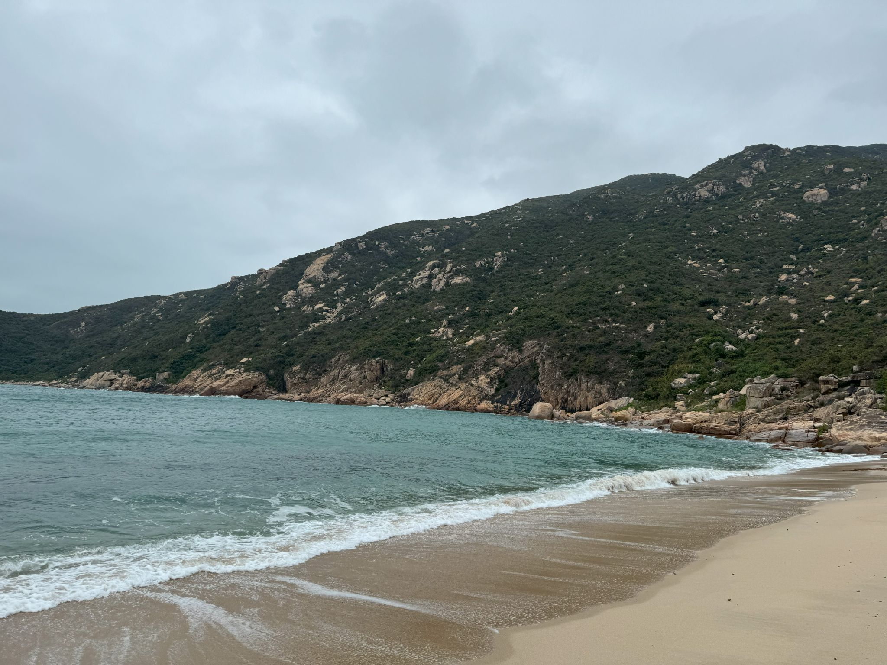
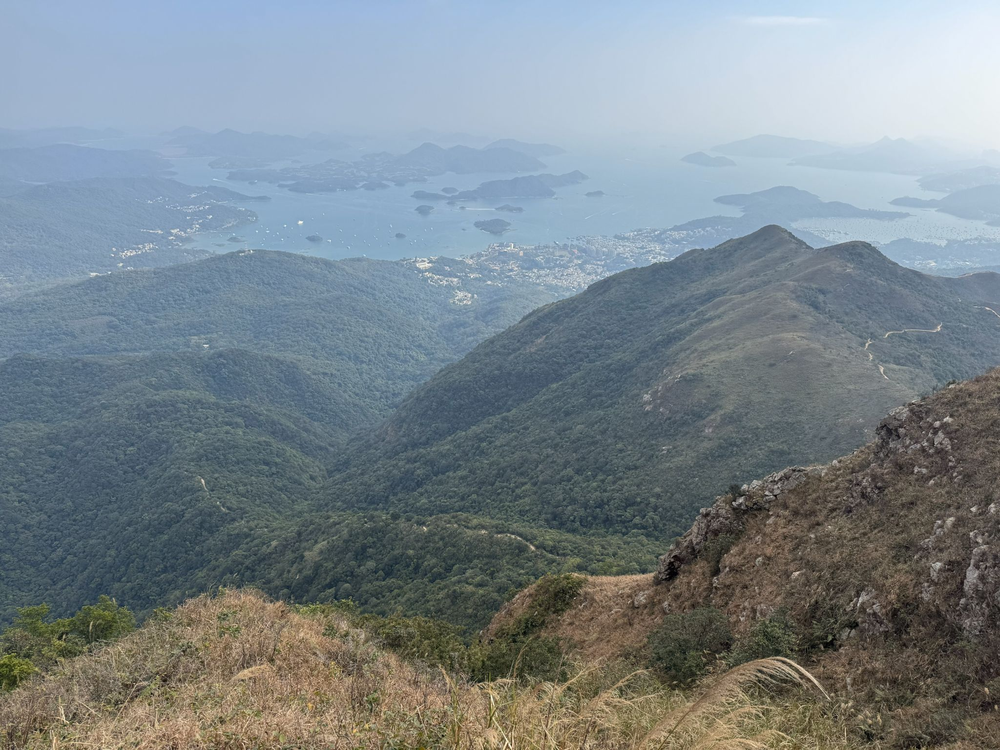

On the trail
Personal Life
In my personal time, I enjoy hiking across Hong Kong and discovering its ridgelines, islands, and coasts. Being outdoors offers a welcome change of pace and a simple way to stay connected with nature.

03 · 南丫島Lamma Island 05 · 大嶼山Lantau Trail
09 · 馬鞍山Ma On Shan